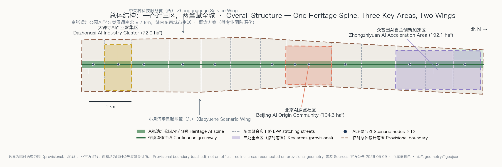
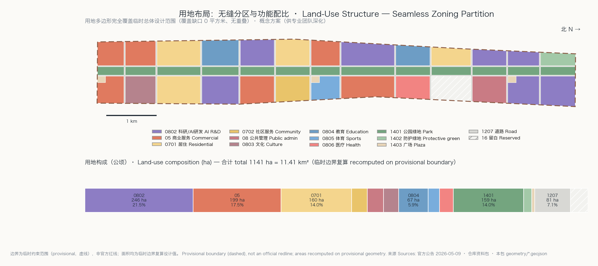
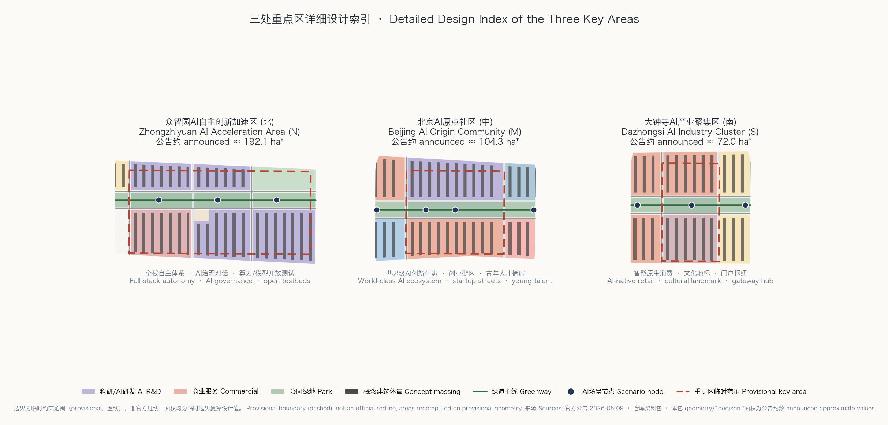
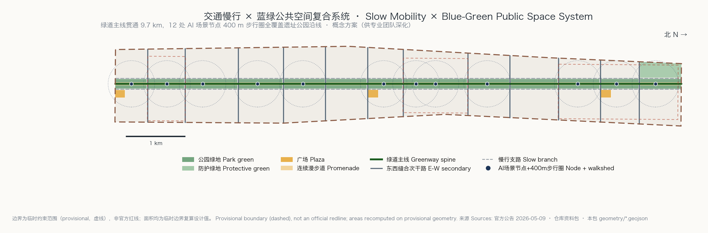
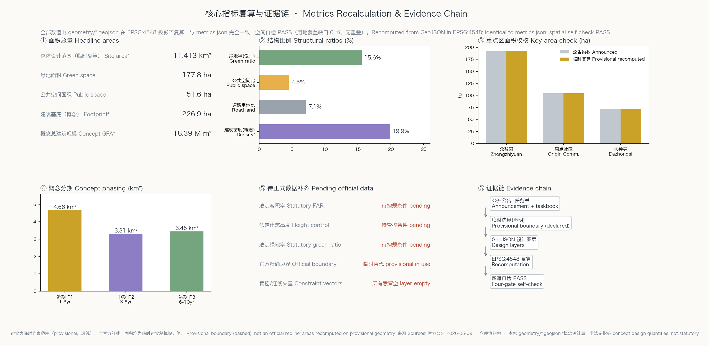

连续体：百年京张AI创新带三区两翼协同城市设计
以京张遗址公园为9.7公里连续AI学习脊，缝合东西、贯通南北，将众智园、AI原点社区、大钟寺三区与两翼组织为感知—验证—扩散的创新闭环，并以12个AI场景节点、无缝用地分区和可复算指标体系支撑概念性城市设计。
连续体：百年京张AI创新带三区两翼协同城市设计
方案主名称为「连续体 CONTINUUM」，副名称「百年京张AI创新带」。命名同时回应两条线索：京张铁路一百年来从蒸汽到智能的技术连续体，以及本方案最核心的空间判断——把9.7公里长的遗址公园建成一条不断学习、持续进化的连续公共脊。本方案为面向智能体开源征集的概念方案，所有空间安排均为概念建议、参考方案，供专业团队深化研究，不替代正式规划，不构成政府审定结论。
设计依据与资料清单
本方案的全部事实基础来自公开或清权来源。设计任务、三层范围文字四至与面积约数取自北京市规划和自然资源委员会2026年5月9日发布的资格预审公告 来源；三大定位、五大功能、三区两翼、六项智能体任务与边界条款取自面向智能体任务书摘录 来源；用地分类、图层与指标口径遵循仓库资料包的枚举与schema约定 来源。在选用任何材料前，我们先读取公开来源登记表区分其用途边界：正式声明只依赖 formal-ready 来源，背景类与临时类材料均按其限制使用 来源。
官方精确边界矢量至今未发布，这是本包最重要的资料缺口。总体设计范围与三处重点区均使用仓库发布的临时粗略多边形，并在几何属性、假设记录与本文中反复声明其临时性 来源。这意味着本包一切面积数值都是临时边界上的复算设计值，不是官方精确面积；官方矢量公布后，全部精度敏感指标将按既定路径整体重算。强制专业标准一律以仓库内本地快照为准读取，而非仅凭外部链接 来源。完整的来源、指标、标准、深度与任务覆盖索引保存在结构化文件中，本文只在关键判断处附证据锚点。

三层范围工作框架
三层范围各自承担不同深度的工作。统筹研究范围约43.6平方公里，工作目标是产业战略与未来城市形态研究，回答"海淀为什么能承载世界级AI创新带"；总体设计范围约11.4平方公里，达到控规深度的总体城市设计，本包的用地分区、指标复算与更新框架均在此层完成，临时边界复算面积为11.413平方公里 指标；重点区域范围约368.4公顷，对众智园、原点社区、大钟寺三区开展规划综合实施方案深度的详细设计 深度。
三层之间的传导关系是：统筹层提出"感知—验证—扩散"的创新闭环战略，总体层把闭环翻译为一脊、十三段、两翼的空间结构与用地配比，重点层将结构落到街区与建筑组群。由于三层边界均为临时约束范围（provisional constraint），本节明确其适用限制：临时多边形只用于生成、可视化与自检，不得作为官方红线、审批依据或精确面积声明 空间数据。官方矢量到位后需重算的对象包括：全部用地面积与比例、三区面积校核、分期面积、五张图件与图纸、离线可视化中的数值展示。

统筹研究范围产业与未来城市研究
统筹层的核心判断是：海淀的AI创新优势不在单点园区，而在"高校原始创新—中试验证—产业扩散"的链条密度，本带应当成为把链条压缩进一条步行可达廊道的空间装置 来源。为此我们研究了八个全球创新街区案例并取其可迁移经验：波士顿肯戴尔广场证明实验室与街道零距离能提高转化速度；伦敦国王十字证明遗产场所能成为科技区的身份锚点；新加坡纬壹城证明"工作—居住—学习—游憩"混合是留住人才的关键；深圳南山证明硬件供应链邻近性的价值；巴黎Station F证明超级孵化器的旗舰效应；纽约Cornell Tech证明校企共址模式；东京涩谷证明轨道枢纽上盖的创业生态；旧金山Mission Bay警示单一功能园区在生活配套滞后时的空心化风险。这些经验转化为本方案的混合用地、脊上验证场与门户枢纽布局 标准。
命名体系与视觉识别方向：主标识「连续体 CONTINUUM」以京张铁路"人字形"折返线为原型，抽象为一条折线贯穿三个节点圆的动态标志，三节点对应三区、折线对应学习脊；标准色采用"信号绿+钢轨灰+智能紫"；命名族按"段—节点—场景"三级展开（如"原点段·五道口秀场"）。字体、图形均为原创方向描述，不使用未经授权的现有商标或字体成品。未来城市形态方面，本带以"城市智能体"为原型：每个场景节点既是物理空间也是数据与治理的最小单元，AI文化、AI社会与AI城市三层叙事沿脊展开 深度。
总体设计范围城市更新与控规深度城市设计
总体层把战略翻译为可复算的空间结构：一条170米宽的遗址公园AI学习脊贯通南北，两侧各一条22米慢行支路，十二条东西缝合次干路把1.37公里宽的带域切成十三个功能段，自南向北依次为南门户、大钟寺产业段、南社区段、高校协同段、中试服务段、中社区段、五道口活力段、原点社区段、清华东科教段、北社区留白段与众智园三段 空间数据。用地分区完全覆盖临时边界且零重叠（覆盖缺口0平方米），科研用地约246公顷居首，商业服务约199公顷、居住约160公顷次之，公园绿地约159公顷 指标。
更新框架采用"脊线引领、段内平衡"：每段以遗址公园断面改造为触媒，带动两侧地块的保留、改造与更新；建筑总规模按概念体量测算约1839万平方米，对应概念强度1.61，此为低置信度设计量而非法定容积率 指标。缺失的法定控制条件——容积率、高度、密度、绿地率、退线——全部记为待正式数据补齐，并在假设记录中写明复算触发条件，不以任何方式伪装为审定指标。城市风貌以"钢轨灰+砖红+信号绿"为基调，脊侧建筑采用退台与骑楼断面，保证公园视线与冬季日照。创新指标体系设AI创新密度、场景开放度、慢行连通度、人才可负担性四组，均可由本包几何与指标文件复算或由后续运营数据补充 深度。
重点区域详细设计
众智园AI自主创新加速区（北，公告约192.1公顷）定位为全栈自主体系与AI治理话语权的承载地。空间结构为"一场两翼"：中部AI广场承载全球开发者年会与治理对话，西翼布置全栈研发组团（芯片—框架—模型—应用垂直邻接），东翼为算力与模型开放测试场；北端结合五环防护绿带设置门户绿廊。建筑采用大进深研发板楼与中庭实验塔混合，概念高度自脊向外递增 空间数据。原点社区（中，约104.3公顷）承接"世界级AI创新生态"：以创业街区为骨架，脊东侧布置企业服务Copilot前台与五道口青年秀场的延伸界面，脊西侧为科研混合街坊；人才公寓与国际社区服务嵌入各街坊，保证24小时活力 空间数据。
大钟寺AI产业聚集区（南，约72.0公顷）定位智能原生消费与门户枢纽：大钟寺文化地标与智能原生商业形成"古钟×新声"的对话，站前广场组织低速接驳与无人配送测试的南端起点 空间数据。三区共用一套详细设计模板：定位、空间结构、建筑更新、交通慢行、公共空间、AI场景与实施风险七项俱全，详见三区索引图与A3图册。由于三区边界为临时范围，所有街区级结论均为方向性设计，地块边界、拆改留与工程可行性待官方数据与专业深化确认 深度。

AI 创新生态、人才画像与 AI+ 场景
本带服务五类用户画像：①硬核研究者（高校与院所，需要实验室—测试场零距离与深夜可达的第三空间）；②创业者与工程师（需要低成本办公、企业服务前台与投资人可遇性）；③AI原住民青年（学生与初入职者，需要可负担居住与身份认同场所）；④社区居民与银发群体（需要适老无障碍的AI生活服务而非被技术排斥）；⑤全球访客与开发者（需要可朝圣、可体验、可参与的开放场景）。生态机制上，土地与空间由分段混合供给保障，算力与数据由众智园开放测试场统筹，资金与场景由两翼的中关村服务资源和小月河应用界面注入 来源。
十二张AI场景卡沿脊布置（SN-01至SN-12），每张卡均定义空间锚点、服务对象、运行数据、隐私边界、人工复核与运营主体，完整属性见公共空间图层 空间数据。其中三个产业测试验证场景为：SN-03众智园算力与模型开放测试场（企业模型准入评测）、SN-07低速无人配送测试环（东侧支路+社区段真实路况）、SN-11大钟寺智能原生消费测试场（零售机器人与无感支付）。其余场景覆盖AI+医疗导航（SN-04）、AI+交通体检（SN-08）、AI导览叙事（SN-09、SN-12）、社区适老服务（SN-10）等。所有场景以数据最小化采集、现场可见的告知标识与可人工复核为前提，不设无法申诉的自动决策 深度。
用地、建筑规模与拆改留方案
用地布局逻辑是"脊定骨架、段定功能、街定尺度"：公园绿地159公顷构成连续骨架，道路用地81公顷（占比7.1%）形成小街区密路网，其余用地按段落功能配比 指标。建筑层面，171个概念体量按条式板楼布置，基底总面积约227公顷，概念密度19.9% 指标。拆改留采用四类概念分类：保留（现状质量良好的高校与成熟社区建筑）、改造（脊侧界面建筑的首层开放化与立面更新）、更新（低效产业用地整体再开发）、新建（留白用地与广场周边的触媒项目）。由于现状建筑普查与权属数据未随公开资料包发布，本包不对任何具体地块给出拆改留结论，仅提供分类方法与段落级方向 来源。
规模测算的边界必须交代清楚：概念总建筑规模1839万平方米由171个基底乘以概念层数得出，置信度低，其作用是说明产业空间供给的量级与分布方向，不等于法定建设规模 指标。法定容积率、高度与密度在控规条件公布前一律记为待正式数据补齐；届时专业团队应以官方条件为准重新测算，本包的概念量随即降级为参考背景 标准。
交通、轨道、市政与公共服务设施
交通组织的核心是把带域从"被过境交通切割"转为"由慢行网络缝合"。十二条东西缝合次干路采用慢行优先断面（机动车双车道+双侧宽人行道+骑行道），跨越遗址公园处一律做平接或缓坡，消除现状慢行断点；南北向由两条22米慢行支路承担公交微循环与低速接驳，绿道主线9.7公里全线无障碍贯通 空间数据。轨道衔接上，方案在大钟寺、五道口、清华东路西口等既有站点周边布置站前广场与接驳设施，站点500米步行圈覆盖沿线主要功能段；12个场景节点的400米步行圈实现遗址公园沿线全覆盖 指标。
市政与新型基础设施采用"传统管廊+端侧算力"双网融合：次干路下预留综合管廊走廊，场景节点同址部署边缘算力舱与分布式能源（光伏雨棚+储能），使算力像路灯一样成为街道家具。公共服务按"15分钟创新生活圈"配置：每个功能段至少一处社区服务设施（0702用地共35公顷），高校段与科教段共享体育与医疗设施 空间数据。所有线位与管廊均为概念走向，道路红线与市政容量待官方条件确认 深度。

蓝绿空间、公共空间与城市风貌
蓝绿系统以遗址公园AI学习脊为主干（公园绿地159公顷），北端接五环防护绿带（18公顷），东翼概念上呼应小月河蓝绿走廊，形成"一脊一环一水"的开放空间骨架；绿地率设计值15.6%为几何复算结果，法定绿地率待控规条件确认 指标。公共空间体系由48米宽连续漫步道、三处站前/核心广场与12个场景节点组成，公共空间比4.5%，全部沿脊可步行串联 指标。漫步道分三条平行线索：轨道遗存线（保留道床与信号设施作为展陈）、学习线（AI导览与开发者展示界面）、活力线（骑行与跑步道）。
AI朝圣地标设三处：①众智园"折返点"——以人字形铁路为原型的AI治理对话塔，塔身实时显示全球开源社区的贡献流；②原点社区"第一行代码"广场——镌刻中国AI里程碑的下沉剧场与荣誉展示体系（年度铭牌+开发者之墙）；③大钟寺"钟声计算"馆——古钟声学与生成式声音艺术的对话空间，兼作京张记忆口述史档案馆。三处地标均嵌入公共空间网络而非孤立摆件，与中关村创新文化、开发者社区仪式（年会、马拉松、开源之夜）绑定运营 空间数据 深度。城市基调延续"钢轨灰、砖红、信号绿"，屋顶形态沿脊做第五立面控制，地标不做过度娱乐化处理。
更新项目清单、实施政策与分期计划
概念更新项目共14项，按分期组织：近期（1-3年，4.66平方公里）含P1-1遗址公园学习脊贯通、P1-2众智园AI广场与开放测试场、P1-3原点社区创业街区首期、P1-4大钟寺站前广场与消费测试场、P1-5三处朝圣地标方案国际征集 指标；中期（3-6年，3.31平方公里）含P2-1至P2-5的东西缝合次干路成网、中段社区更新、高校协同带、慢行支路公交微循环、边缘算力与管廊 指标；远期（6-10年，3.45平方公里）含P3-1至P3-4的北段留白启用、整带风貌成熟、场景网络加密与滚动更新机制 空间数据。
实施政策建议四条：①"脊线更新单元"政策——把遗址公园断面与两侧第一排地块捆绑为联动更新单元，以公共空间增量换取地块功能混合许可；②"场景开放条款"——更新项目供地时附带场景开放义务，运营数据在合规前提下汇入城市智能体底座；③"概念-试点-推广"三步机制，任何AI场景先在测试场验证再上街；④设立"连续体运营公司+开发者理事会"双层治理。长期运营含年度"京张AI周"（全球开发者年会+城市开放日）、季度场景马拉松与常态化导览体系，品牌资产沉淀于命名体系与荣誉展示制度。以上活动、资金与政策均为概念建议，非政府既定安排 来源 深度。
指标体系、面积复算与合规矩阵
指标体系分四层。总量层：临时边界复算总面积11.413平方公里，与公告约数11.4平方公里偏差0.1%，属临时边界正常误差 指标。结构层：绿地率15.6%支撑人才日常游憩与遗产展示，公共空间比4.5%集中投放在脊线保证交往密度，道路用地比7.1%对应小街区密路网，概念密度19.9%保持研发街区的紧凑与通风平衡 指标。重点区层：三区临时复算面积192.9、104.3、72.0公顷，与公告约数偏差均在0.5%以内，校核通过 指标。运营层：12个场景节点、14个更新项目、3期分期均可由几何文件直接计数复核。
复算方法全程可追溯：所有面积在EPSG:4548投影下由GeoJSON复算，用地分区与总边界完全一致（覆盖缺口0平方米、无重叠），空间自检通过。任务覆盖方面，公告1.3、1.4、1.5全部任务与智能体任务书agent.1至agent.6六项任务在任务覆盖矩阵中逐条对应本文章节、图层、指标与图纸；专业标准矩阵覆盖全部强制标准；设计深度矩阵15项俱全 标准 深度。指标含义在本文各节已用人话解释，机器索引不再重复。

风险、版权与合规说明
数据与边界风险：本包最大不确定性是官方精确边界与法定控制条件缺失，已通过临时边界声明、待补齐指标与复算触发条件三重机制管理；官方数据公布后需整体重算，重算范围在假设记录中逐项列明 来源。隐私与伦理风险：所有AI场景遵循数据最小化、现场告知、可人工复核三原则，不含人脸识别常态化布控等过度监控设计；适老场景保留完整的非数字替代通道，符合无障碍环境建设法与适老化政策要求 标准。生成内容合规：本包全部文本、图件、几何由AI智能体生成，生成方式、模型与工具在agent卡与版权声明中披露，符合生成式AI服务管理暂行办法的标识要求 标准。
版权边界：命名、标志、地标均为原创方向描述，未使用任何未经授权的商标、字体成品、人物肖像或论文图像；引用的全球案例仅作公开事实的经验总结。官方声明边界：本方案不声称任何政府批准、投资承诺或实施安排；容积率、高度、拆改留等表述均为概念建议；专业复核需求包括控规衔接、文保影响评估、交通与市政承载力专项、地块权属核查四项，详见版权声明文件 深度。
参考资料
以下为真正影响方案判断的主要材料（完整机器索引以结构化文件为准）：
1. 北京市规划和自然资源委员会：百年京张AI创新带城市设计国际方案征集资格预审公告，2026-05-09 来源 2. 面向全球智能体开展百年京张AI创新带城市设计开源征集任务书摘录，2026-05-18 来源 3. 仓库公开资料包：design_brief、枚举、指标口径与schema约定 来源 4. 临时粗略边界多边形及其推导说明（provisional_boundaries.geojson）来源 5. 《城市设计管理办法》《城市、镇控制性详细规划编制审批办法》本地快照 标准 6. 《国土空间调查、规划、用途管制用地用海分类指南》本地快照 标准 7. 《生成式人工智能服务管理暂行办法》《无障碍环境建设法》本地快照 来源 8. 全球创新街区公开案例研究：肯戴尔广场、国王十字、纬壹城、南山、Station F、Cornell Tech、涩谷、Mission Bay（公开报道与规划文件的经验综述）